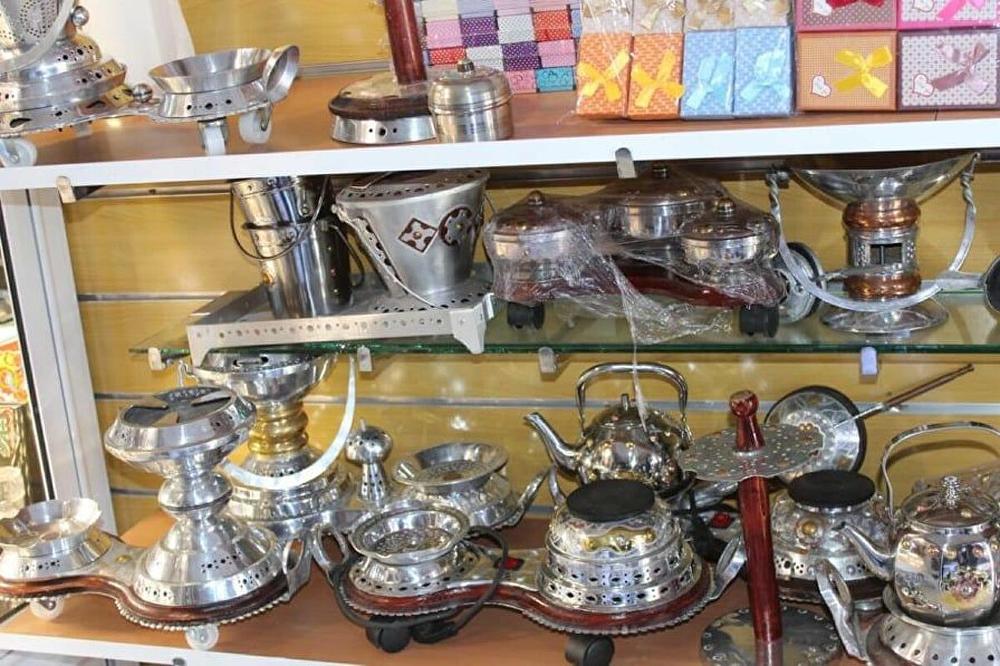

L’artisanat représente un legs historique incommensurable pour les populations sahraouies des provinces du Sud du Royaume.
De nouvelles tendances de production, en même temps que les méthodes de commercialisation ont connu de grandes transformations résultant de la sédentarisation des sahraouis ainsi que les changements intervenus dans leurs habitudes de consommation.
De plus, l’artisanat dans ces régions se concentre plus particulièrement sur le traitement par les artisans des peaux de chèvres et de chameaux, en plus de l’ivoire coloré et l’argile locale transformés en produits utiles et œuvres d’art tels que les bijoux et articles décoratifs en cuivre.
Le Complexe d’Artisanat, établi à Laâyoune, contribue à organiser et à former des artisans pour préserver ce patrimoine et en raison des avantages qu’il procure à une large frange de la population en terme d’emploi et de services.
Il est clair que les sahraouis ont créé de l’artisanat populaire et traditionnel dont L’asarmi n’est qu’un exemple.
L’asarmi est une sorte de coussin en cuir finement brodé de décorations.
D’autres produits existent tels que de petites boîtes et récipients destinés à contenir du parfum et des bijoux de femme.
Ces objets sont utilisés pour conserver des biens rares ou des documents manuscrits ou administratifs, de mariage ou de propriété immobilière.
Le développement de l’artisanat est lié à l’héritage culturel des saharouis qui dans une large mesure dépend de l’élevage de chèvres et de chameaux, puisque les peaux de ces animaux sont utilisées pour la fabrication d’autres objets tels que les divans et les semelles en cuir pour ne citer que ceux-là.
La laine, cependant, est utilisée pour le tissage de tapis et des tentes utilisées par les sahraouis comme abris.
Le travail du bois est l’une des activités traditionnelles les plus prisées au Sahara.
Cela est dû essentiellement à l’importance des objets en bois dans la vie nomade au Sahara.
Le travail du bois comporte plusieurs activités dont notamment mechqeb, Errahla, les poutres de tente (Al khayma), les caisses/caissons en bois ainsi que la grande majorité des ustensiles de cuisine (Al kadha, Al Gasâa…).
Le travail du bois est également associé à la joaillerie et les bijoux de fantaisie ainsi qu’à l’enjolivure des vêtements en cuir.
Pour sa part, le travail de l’argent reste le métier le plus répandu dans les provinces du sud et notamment la joaillerie.
C’est principalement un métier d’hommes mais il existe de plus en plus de femmes qui s’intéressent à ces métiers.
L’artisan de l’argent fabrique des bagues, des boucles d’oreille, des bracelets et des colliers en utilisant des fours et des instruments traditionnels.
Le travail du cuir est un métier exercé en majorité par les femmes sahraouies.
Il repose, dans une première phase, sur la tannerie des peaux de chèvres et de chameaux.
Pour ce faire, les femmes sahraouies utilisent un outil de dessin en couleur appelé Alkhatata, un instrument de découpage appelé Alkabda et un autre de broderie appelé Lachfa.
Les emplois dans le secteur de l’artisanat concernent 960 artisans représentant 2% de la population active de la région et comportant 14 secteurs de production en plus du complexe d’artisanat destiné à rehausser le niveau d’éducation et d’expertise des jeunes artisans.
Cela a également contribué à soutenir et à promouvoir l’artisanat local.
En somme, les potentialités de l’industrie de l’artisanat dans les provinces sahariennes sont énormes.
Elles peuvent prétendre à plus de croissance et de dynamisme grâce au tourisme.

.jpg)
.jpg)